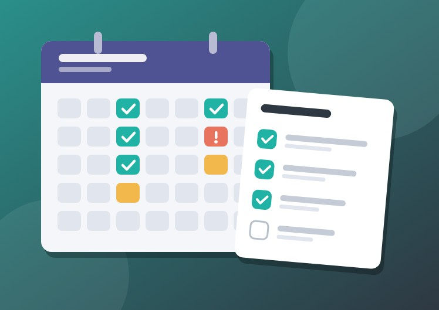
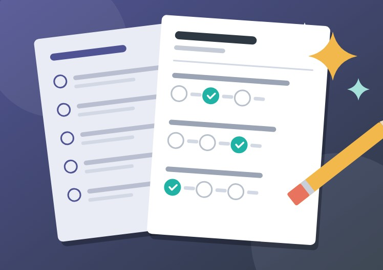
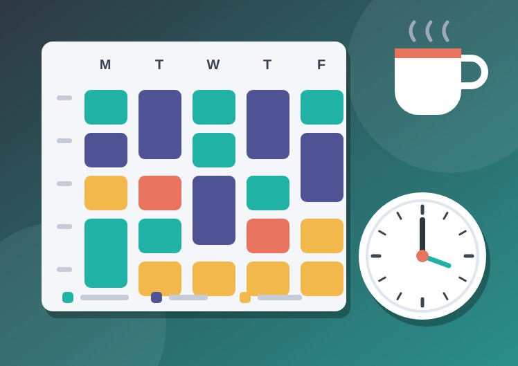

I earned a 79 on my first test.
I was still in a summer mindset. That told me I had to change how I studied before the next one.
Now I review class resources and use AI to create practice problems and explain topics in different ways.
I wrote this after my own first semester at UNO. It covers five habits that would have saved me stress,
plus the tools and campus resources that help you keep them.

College gives you fewer reminders than high school did. Nobody checks whether you looked at the due date, so you have to check on your own.
Why it mattersStaying organized lowers stress and keeps you from missing assignments you could easily have finished.

My first test taught me this one. The full story is below.
Why it mattersOne lower score showed me that preparing early works better than catching up later. Now I study with a plan.
UNO has academic support so you do not have to figure everything out alone. Find it early, before you fall behind.
Why it mattersGetting help early builds both understanding and confidence, and a small gap never grows into a big one.
Why it mattersThe people you meet give you advice and support now, and they can point you to jobs later.

Why it mattersBalance keeps you motivated, and motivation is what carries you through a full semester.
I was still in a summer mindset. That told me I had to change how I studied before the next one.
Now I review class resources and use AI to create practice problems and explain topics in different ways.
What I use and recommend.
Formerly called Better Canvas. A browser add-on that makes it easier to keep track of assignments and due dates in Canvas.
Peer tutoring through the Math-Science Learning Center in the College of Arts and Sciences.
Try asking: "Summarize what we covered in my last class."
Try asking: "Explain this topic a different way."
Try asking: "Write 10 practice problems for my test."
Check its explanations against your class materials, and follow each professor's rules for AI use.
These five habits are simple, and they work together. Together they can make your first semester at UNO less stressful and more successful.